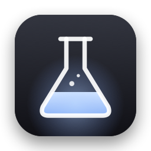

Testers wantedThree minutes with your logo.
Lidworks Lab walks you through a short test on the new MacBook Pro: it changes the brightness, asks what the glowing logo does, and records how the hardware responds. Send us the results, and Lidlight is yours free when it ships.
Who we need most: the MacBook Pro with PROLED XDR Display, the one whose Apple logo lights up. Have a different Mac? Run it anyway: a “before” picture helps too.
The quickest way: one line.
Open Terminal (press ⌘ Space, type “Terminal”, press Return), paste this line and press Return. It puts the app in Applications and opens it. No password, no security prompts.
curl -fsSL https://lidworks.github.io/lab/install.sh | bash
Like to see what it runs first? Read the installer: it's short, and it only downloads the app from our GitHub page, copies it to Applications and opens it.
Or download it the usual way
- Download LidworksLab.dmg, open it, and drag Lidworks Lab into Applications.
- Double-click the app. macOS says it can't verify it, because we haven't paid Apple to sign it yet. Click Done.
- Open System Settings → Privacy & Security and scroll down. Next to “LidworksLab was blocked”, click Open Anyway and confirm with your password or Touch ID.
- Click Open Anyway once more. That's it, you only do this once. On macOS 13 or 14 it's simpler: Control-click the app, choose Open, then Open again.
Four screens, about three minutes.
- Get a view of the logo. You'll be asked what it's doing. Tilt the screen back, sit facing a mirror, or prop your phone behind the lid with the camera on. A dim room helps.
- Answer at each step. The screen gets bright, dim and dark, pulses gently, and slowly turns red, green and blue; your Mac plays a few ticks (turn the sound on); the keyboard light blinks. Leave the brightness keys alone until it's done. “Can't tell” is a perfectly good answer.
- Touch test, if your screen is a touchscreen. Tap, swipe and pinch in the box, then swipe in from the edges of the screen. No touchscreen? Press Skip.
- Review and send. You see every byte first. You'll get an ID like
LAB-7KQ2-M9XD: send it to @Lidworks312 or lidworks@proton.me to claim your free Lidlight. Then press Delete App and Quit: you don't need to keep it.
Not just an off switch.
Turn it down
Find out what the logo follows, so Lidlight can dim it, switch it off or put it on a schedule.
Make it move
Measure how fast it responds, so it can breathe like the old sleep light, or pulse with your music.
Light each part
Learn whether it's one light or many LEDs. If each can be controlled, the logo could flow like liquid.
You see it all before it's sent.
- Sent only when you press Send, after a full preview. You can save it to a file instead, or not send it.
- Your Mac's built-in hardware and the system parts that handle brightness and lights, plus your answers and, if you like, a photo of the logo (its location and other hidden details removed). No serial numbers, names, accessories, files, location or IP address.
- Deleted no later than 90 days after Lidlight launches. Email your submission ID and we'll delete it sooner.
The full list, with the reason for each item: privacy notice.
三分钟，帮我们弄清楚发光 logo。
我们需要的是 logo 会发光的新款 MacBook Pro（PROLED XDR 屏）。其他 Mac 也欢迎跑一遍，当作对照数据。做完发送，Lidlight 上线后免费送你一份。
安装（二选一）
- 最快：打开「终端」（按 ⌘ 空格，输入"终端"，回车），粘贴上面那行
curl … | bash命令，回车。会自动装好并打开，不用输密码，也不会弹安全提示。 - 手动：下载 dmg，把 App 拖进「应用程序」，双击。系统提示"无法验证"时点「完成」，然后打开「系统设置 → 隐私与安全性」，拉到底点「仍要打开」，输入密码或按指纹，再点一次「仍要打开」。只需要做一次。
测试时
- 要能看到 logo：把屏幕往后仰，或者对着镜子，或者把手机摄像头对着屏幕背面。房间暗一点更好看清。
- 屏幕会变亮变暗、黑几秒、轻微闪动、慢慢变红变绿变蓝，Mac 会"嘀"几声（请打开声音），键盘灯会闪。测试结束前别按亮度键。看不清就选"看不清"。最后一页可以附一张 logo 的照片（关灯拍），很有帮助。
- 最后会显示要发送的全部内容，你点「发送」才会上传。拿到编号（比如
LAB-7KQ2-M9XD）后，私信 X 上的 @Lidworks312 或发邮件到 lidworks@proton.me 领 Lidlight。 - 测完点「删除 App 并退出」就行，不用留着。
- 发送失败？在中国大陆可能连不上我们的服务器。开代理再试，或者点「存成文件…」把文件发邮件给我们。
收集哪些数据、为什么收集，见隐私说明（末尾有中文摘要）。
Questions
macOS won't open the app.
That's Gatekeeper being careful with an app that isn't signed by Apple. Use the one-line install above, or follow the “usual way” steps: System Settings → Privacy & Security → Open Anyway.
Is the one-line install safe?
Only run Terminal commands from people you trust, and that includes us. You can read the installer first: it checks your Mac, downloads the app from our GitHub Releases page, copies it to Applications and opens it. It doesn't ask for your password or change any settings. It skips the security prompt only because files downloaded by Terminal aren't marked as coming from the internet.
Sending failed.
Try again in a minute. If it still fails, press Save to File and email the file to lidworks@proton.me. Some networks, like many in mainland China, block the service we use. A VPN fixes that, or just email the file.
How do I remove it?
Press Delete App and Quit on the last screen, or drag Lidworks Lab from Applications to the Trash. It leaves nothing else behind.
Is it safe for my screen?
It only changes the brightness setting and darkens the picture for a few seconds, the same things the brightness keys and Night Shift do. Everything is put back when the test ends, when you press Stop Test, and even if the app is force-quit or crashes: a tiny helper restores your brightness and keyboard light within a second.
I'm sensitive to flashing light.
The pulse step changes the brightness at most twice a second, below the three-flashes-a-second guideline, and the picture is compensated so the screen looks almost steady. You can still press Stop Test at any time and skip to the end.
Why isn't it signed by Apple?
Signing costs a yearly fee, and we're spending it on Lidlight first. You can check what the app does: everything it sends is shown to you first.
I'd rather use Terminal.
There's a script version too: one command, no app. See the Terminal test. It saves its results to a zip file that you send yourself.
I'm at an Apple Store.
Please don't install apps on display Macs. The Terminal test runs without installing anything and cleans up after itself.